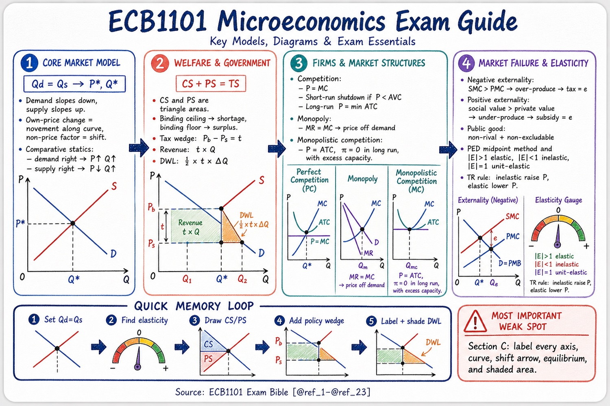

30 Aug 2026 · AskSia · ECB1101
📈 ECB1101 Micro Exam Cheat-Note
Introductory Microeconomics · Monash University
Every graph, every model, every mark — plus the one-page visual Sia drew from the bible.
每张图、每个模型、每一分 —— 外加 Sia 从 bible 里画出来的一页视觉图。
11formulas1Sia visual9traps5step memory loop

🦭 Sia drew this from the ECB1101 Bible PDF (/studyguide) — 4 models, the memory loop, the weak spot.
📌Exam facts · 考试事实
- Final exam50% · three sections
- Section Cthe drawing section — diagrams with every area labelled
- First marks on any policy questionthe free-market equilibrium: set Qd = Qs → (P*, Q*) → clean labelled diagram
- NotationMonash uses TS for total surplus and e for the external effect
🔁Quick memory loop · 五步记忆环
- 1 · Set Qd = Qs→solve for P*, Q*
- 2 · Find elasticity→midpoint method → |E| > 1 elastic · < 1 inelastic · = 1 unit
- 3 · Draw CS / PS→CS above price under demand · PS below price above supply
- 4 · Add the policy wedge→tax t · ceiling · floor · externality e
- 5 · Label + shade DWL→½ × t × (Q₁ − Q₂)
🧮11 formulas · 公式
Consumer surplusCS = ½ × Q* × (Pmax − P*)
Producer surplusPS = ½ × Q* × (P* − Pmin)
Total surplusTS = CS + PS — maximised at competitive Q*
Tax wedgePb − Ps = t
Tax revenue · DWLt × Q₂ · DWL = ½ × t × (Q₁ − Q₂)
PED (midpoint)(ΔQ / avg Q) ÷ (ΔP / avg P)
Total-revenue ruleinelastic → raise P raises TR · elastic → raise P lowers TR
Monopoly MRP = a − bQ ⇒ MR = a − 2bQ · profit-max at MR = MC, price off demand
Perfect competitionP = MR = AR · produce at P = MC · shut down if P < min AVC · LR: P = min ATC
CostsATC = AVC + AFC · MC = ΔTC/ΔQ = w / MP
Opportunity cost (table)units of the OTHER good given up ÷ units of this good gained
🔑Key terms · 关键术语（双语）
| Term | 中文 | Meaning |
|---|---|---|
| Movement along vs shift | 沿曲线移动 vs 曲线移动 | own price → along · any shifter → shift |
| Comparative advantage | 比较优势 | lower opportunity cost — THIS decides who specialises |
| Deadweight loss | 无谓损失 | surplus destroyed when Q ≠ Q*, gained by no one |
| Tax incidence | 税收归宿 | the less-elastic side bears more, whoever writes the cheque |
| Externality (e) | 外部性 | social cost = WTS + e · social value = WTP + e |
| Public good vs common resource | 公共品 vs 公共资源 | non-rival + non-excludable (free-rider) · rival + non-excludable (commons) |
| Long-run tangency | 长期相切 | monopolistic competition: P = ATC, profit 0, excess capacity |
⚠️9 exam traps · 考试陷阱
- Absolute advantage does NOT decide specialisation — comparative advantage (opportunity cost) does.
- A price ceiling binds only BELOW P* (shortage); a floor binds only ABOVE P* (surplus). Trade happens on the short side.
- Tax incidence = relative elasticity, never "who pays the government".
- Shut-down uses AVC (short run); exit uses ATC (long run). Don't swap them.
- Monopoly: MR < P. Read Q from MR = MC, then the PRICE off the demand curve.
- Demand shift moves P* and Q* the same way; supply shift moves them opposite ways; both shift → one is ambiguous.
- Sunk costs are irrelevant to a forward-looking decision — they are not an opportunity cost.
- Revenue (rectangle) is transferred, not lost; only the DWL triangle is lost.
- Section C: a diagram without labels earns nothing. Axes, curves, arrows, equilibrium, shaded areas.
✅Externality exam move · 外部性答题步骤
- Identify the failure: externality (which side? which sign?), public good, or common resource
- Draw the social curve a distance e from the private one (above S for external cost, above D for external benefit)
- Read Q_market vs Q* → over- or under-production
- Corrective tax or subsidy = e per unit → back to Q*
- Shade the DWL triangle between the two quantities
✎ Section C: label EVERY axis, curve, shift arrow, equilibrium & shaded area ✎
Source: ECB1101 Exam Bible · 23 pages · 9 chapters → compressed into this one note by AskSia.
Note link: mark-sia.github.io/asksia-notes-lab/n/ecb1101/
P1 / 1 · AskSia Note
{kind=link}